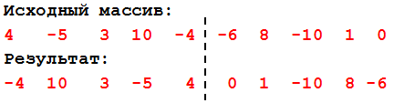
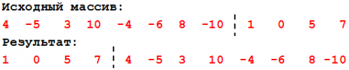

-
- Даны два числа. Найти их сумму, разность,
произведение, а также частное от деления первого числа на
второе.
- Два автомобиля едут друг за другом с
постоянными скоростями V1 и V2 км/час (V1>V2). Определить,
какое расстояние будет между ними через 30 минут после того,
как первый автомобиль опередил второй на S км.
- Составить программу, которая в
зависимости от порядкового номера дня месяца (1, 2, …, 12)
выводит на экран его название (январь, февраль, …, декабрь).
- Составить программу, которая в
зависимости от порядкового номера месяца (1, 2, …, 12)
выводит на экран время года, к которому относится этот
месяц.
- Известна стоимость монитора, системного
блока, клавиатуры и мыши. Сколько будут стоить 3 компьютера
из этих элементов? N компьютеров?
- Напечатать столбиком все целые числа от
20 до 35 и вычислить корни этих чисел.
- Найти все трехзначные числа, сумма цифр
которых равна данному целому числу.
- Напечатать числа следующим образом: 25
25.5 24.8 26 26.5 25.8 . . . 35 35.5 34.8
- Написать программу, в результате
выполнения которой выяснится, входит ли цифра 2 в запись
данного целого числа n.
Пример: 365842.
- Выведите на экран, все нечетные числа,
делящиеся на 3 нацело, лежащие в диапазоне от 35 до 117.
- Выведите на экран, все четные числа от 35
до 117 и нечетные числа, лежащие в диапазоне от 45 до 99.
- Дан массив из 10 целочисленных элементов.
Найдите минимальный элемент массива. Выведите элемент и его
индекс.
- Дан массив из 10 целочисленных элементов.
Найти количество отрицательных и вывести количество на
экран.Заполнить массив случайными числами в интервале
[20,100] и записать в другой массив все числа, которые
оканчиваются на 0.
- Дан массив из 10 целочисленных элементов.
Найти разность между максимальным и минимальным элементами
массива.
- Дан массив из 10 целочисленных элементов.
Удалить повторяющиеся элементы из массива. Дан массив из 10
целочисленных элементов. Найти сумму и произведение
элементов одномерного массива.
- Дан массив из 10 целочисленных элементов.
Разделить элементы массива на максимальный элемент.
- Заполнить массив из 10 элементов
случайными числами в интервале [-10..10] и сделать реверс
отдельно для 1-ой и 2-ой половин массива.

- Заполнить массив из 12 элементов случайными числами в интервале [-12..12] и выполнить циклический сдвиг ВПРАВО на 4 элемента.

- Дан целочисленный двумерный массив
(3х5), размерности n х m, найти сумму всех элементов массива.
- Дан целочисленный двумерный массив(3х5), размерности n х m. Найти сумму и произведение всех элементов массива.
- Дан целочисленный двумерный массив(3х5), размерности n х m. Найти сумму и произведение четных элементов.
- Дан целочисленный двумерный массив(3х5), размерности n х m. Найти сумму и произведение элементов, кратных 3 и 5. размерности n х m.
- Дан целочисленный двумерный массив(3х5), размерности n х m. Найти количество отрицательных элементов, больше -9.
- Дан целочисленный двумерный массив(3х5), Найти номера нечетных элементов, стоящих на четных местах.
- Выделить в слове Х каждую букву "о" с помощью тире слева и справа.
- Заменить в слове Х все буквы "а" на сочетание "ку"
- В слове Х перед каждой буквой "к" вставить букву "н".
|